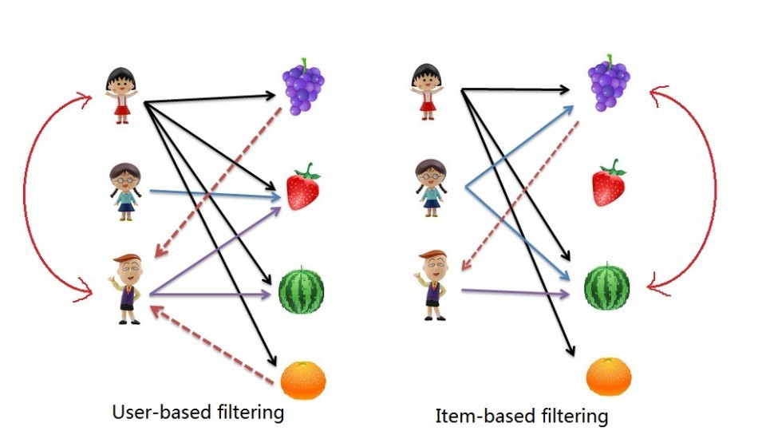

The Collaborative Filtering Recommender is entirely based on the past behavior and not on the context. More specifically, it is based on the similarity in preferences, tastes and choices of two users. It analyses how similar the tastes of one user is to another and makes recommendations on the basis of that.
For instance, if user A likes movies 1, 2, 3 and user B likes movies 2,3,4, then they have similar interests and A should like movie 4 and B should like movie 1. This makes it one of the most commonly used algorithm as it is not dependent on any additional information.
In general, collaborative filtering is the workhorse of recommender engines. The algorithm has a very interesting property of being able to do feature learning on its own, which means that it can start to learn for itself what features to use.
The Math
There are 2 main types of memory-based collaborative filtering algorithms:

1.User-User Collaborative Filtering: Here we find look alike users based on similarity and recommend movies which first user’s look-alike has chosen in past. This algorithm is very effective but takes a lot of time and resources. It requires to compute every user pair information which takes time. Therefore, for big base platforms, this algorithm is hard to implement without a very strong parallelized-able system.
2.Item-Item Collaborative Filtering: It is quite similar to previous algorithm, but instead of finding user’s look-alike, we try finding movie’s look-alike. Once we have movie’s look-alike matrix, we can easily recommend alike movies to user who have rated any movie from the dataset. This algorithm is far less resource consuming than user-user collaborative filtering. Hence, for a new user, the algorithm takes far lesser time than user-user collaborate as we don’t need all similarity scores between users. And with fixed number of movies, movie-movie look alike matrix is fixed over time.
In either scenario, we builds a similarity matrix. For user-user collaborative filtering, the user-similarity matrix will consist of some distance metrics that measure the similarity between any two pairs of users. Likewise, the item-similarity matrix will measure the similarity between any two pairs of items.
There are 3 distance similarity metrics that are usually used in collaborative filtering:
1.Jaccard Similarity: Similarity is based on the number of users which have rated item A and B divided by the number of users who have rated either A or B. It is typically used where we don’t have a numeric rating but just a boolean value like a product being bought or an add being clicked.
2.Cosine Similarity: (as in the Content-Based system) Similarity is the cosine of the angle between the 2 vectors of the item vectors of A and B. Closer the vectors, smaller will be the angle and larger the cosine.
3.Pearson Similarity: Similarity is the Pearson coefficient between the two vectors. For the purpose of diversity, I will use Pearson Similarity in this implementation.